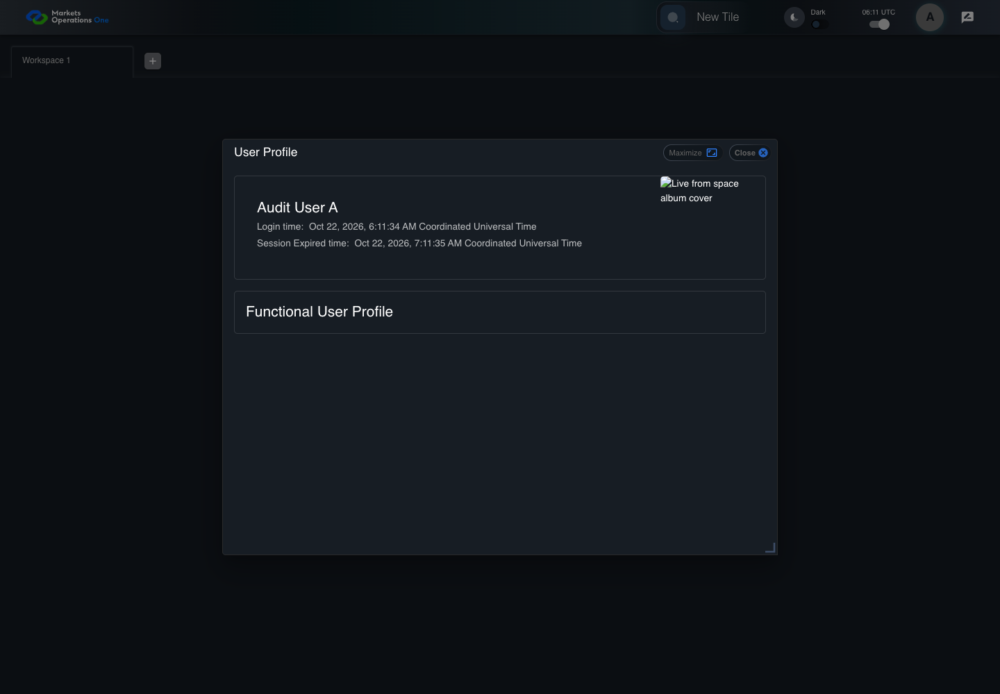
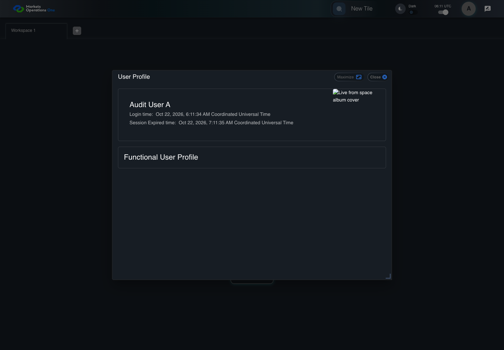

UX-010 keyboard and accessibility probe
PASS · application/run-050/ux-010-keyboard-and-accessibility-probe-7e56ccc1ea33-attempt-1 · ACTUAL_APPLICATION_LOCAL_SERVICES
Actual React shell. Controlled catalog, user identity, photo failures, and SystemJS tenant. Chromium only. Accessibility and layout outcomes are proposed probes; no approved conformance standard is inferred.
2026-10-22T06:11:33.884Z to 2026-10-22T06:11:36.108Z
Assertions and result · Artifact manifest · Exact run inputs and source hashes
Result SHA-256:b5a67ce93b3295e3d61094b71009aefcb6c724e23ad5f23dc4a2134c96ee43aaScreenshot capture: CAPTURED. Named frames: 7.
Step screenshot evidence: COMPLETE. 6/6 canonical steps have execution screenshots.
Canonical step timeline
Given USER-A has keyboard focus on the icon button with test ID "${MFE_APP_PREFIX_STYLE}_avatar_IconButton" on the Home page
Execution: PASSED.
1. step-01 Visible state after step 1: Given USER-A has keyboard focus on the icon button with test ID "${MFE_APP_PREFIX_STYLE}_avatar_IconButton" on the Home page
2026-10-22T06:11:35.253Z · 1440×1000
Step: /Users/lushevol/code/github/ratan-release-impact/workbench/tasks/ui-test-coverage-20261022/test-cases.md:12595
SHA-256:365bc064ef8cf5c078cc86e5b2ea3862073c96c42997e29e292354516d2ec559When USER-A presses "Enter" on the icon button with test ID "${MFE_APP_PREFIX_STYLE}_avatar_IconButton" on the Home page
Execution: PASSED.2. step-02 Visible state after step 2: When USER-A presses "Enter" on the icon button with test ID "${MFE_APP_PREFIX_STYLE}_avatar_IconButton" on the Home page
2026-10-22T06:11:35.364Z · 1440×1000
Step: /Users/lushevol/code/github/ratan-release-impact/workbench/tasks/ui-test-coverage-20261022/test-cases.md:12596
SHA-256:c064721ffd8cfe820c11fa968d23ead18e4bec9d055c7231d99762fad0240edaAnd USER-A focuses the menu item with test ID "${MFE_APP_PREFIX_STYLE}_avatar_Profile" in the menu with identifier "menu-appbar-avatar" on the Home page
Execution: PASSED.
3. step-03 Visible state after step 3: And USER-A focuses the menu item with test ID "${MFE_APP_PREFIX_STYLE}_avatar_Profile" in the menu with identifier "menu-appbar-avatar" on the Home page
2026-10-22T06:11:35.445Z · 1440×1000
Step: /Users/lushevol/code/github/ratan-release-impact/workbench/tasks/ui-test-coverage-20261022/test-cases.md:12597
SHA-256:c064721ffd8cfe820c11fa968d23ead18e4bec9d055c7231d99762fad0240edaAnd USER-A presses "Enter" on the menu item with test ID "${MFE_APP_PREFIX_STYLE}_avatar_Profile" in the menu with identifier "menu-appbar-avatar" on the Home page
Execution: PASSED.
4. step-04 Visible state after step 4: And USER-A presses "Enter" on the menu item with test ID "${MFE_APP_PREFIX_STYLE}_avatar_Profile" in the menu with identifier "menu-appbar-avatar" on the Home page
2026-10-22T06:11:35.589Z · 1440×1000
Step: /Users/lushevol/code/github/ratan-release-impact/workbench/tasks/ui-test-coverage-20261022/test-cases.md:12598
SHA-256:f1ad6af715b123fdb148524e2e24b273d2b5421f473856de2e46f3d7154234f6Then The dialog labelled "User Profile" on the Home page is visible
Execution: PASSED.
5. step-05 Visible state after step 5: Then The dialog labelled "User Profile" on the Home page is visible
2026-10-22T06:11:35.661Z · 1440×1000
Step: /Users/lushevol/code/github/ratan-release-impact/workbench/tasks/ui-test-coverage-20261022/test-cases.md:12599
SHA-256:f1ad6af715b123fdb148524e2e24b273d2b5421f473856de2e46f3d7154234f6And The active element is inside the User Profile dialog
Execution: PASSED.
6. step-06 Visible state after step 6: And The active element is inside the User Profile dialog
2026-10-22T06:11:35.728Z · 1440×1000
Step: /Users/lushevol/code/github/ratan-release-impact/workbench/tasks/ui-test-coverage-20261022/test-cases.md:12600
SHA-256:f1ad6af715b123fdb148524e2e24b273d2b5421f473856de2e46f3d7154234f6
Additional named frames

The final visible state after the named test assertions.
2026-10-22T06:11:35.853Z · 1440×1000Step: Test source: /Users/lushevol/code/github/ratan-release-impact/workbench/e2e/audit-specs/ux-shell.spec.ts:39
SHA-256:
8dfa5e8269d2b252eb6943e0d3ac1a1c4ef6a4533054389e4ac7056103e6eeeeScreenshots establish visible state only. Assertions and traces support functional claims.